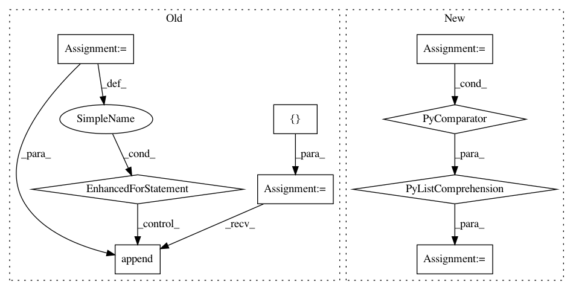

13bbee615c87c812ddcfff73746cd504222e3fb0,onmt/Models.py,,make_base_model,#Any#Any#Any#Any#Any#,561
Before Change
def make_base_model(opt, model_opt, fields, cuda, checkpoint=None):
// HACK: collect source feature vocabs.
feature_vocabs = []
for j in range(100):
key = "src_feat_" + str(j)
if key not in fields:
break
feature_vocabs.append(fields[key].vocab)
emb_opts = {"src_word_vec_size": model_opt.src_word_vec_size,
"position_encoding": model_opt.position_encoding,
"feat_merge": model_opt.feat_merge,
"feat_vec_exponent": model_opt.feat_vec_exponent,
After Change
// Make Encoder.
src_vocab = fields["src"].vocab
num_feat_embeddings = [len(feat_dict) for feat_dict in
ONMTDataset.collect_feature_dicts(fields)]
embeddings = build_embeddings(
model_opt, src_vocab.stoi[onmt.IO.PAD_WORD],
len(src_vocab), for_encoder=True,
num_feat_embeddings=num_feat_embeddings)
if model_opt.model_type == "text":
encoder = Encoder(model_opt.encoder_type, model_opt.brnn,
model_opt.rnn_type, model_opt.enc_layers,
In pattern: SUPERPATTERN
Frequency: 6
Non-data size: 9
Instances
Project Name: OpenNMT/OpenNMT-py
Commit Name: 13bbee615c87c812ddcfff73746cd504222e3fb0
Time: 2017-08-30
Author: nasa4836@gmail.com
File Name: onmt/Models.py
Class Name:
Method Name: make_base_model
Project Name: OpenNMT/OpenNMT-py
Commit Name: 63871d5ab3301d015805abddd8f4259680d6a24a
Time: 2017-09-21
Author: bpeters@coli.uni-saarland.de
File Name: translate.py
Class Name:
Method Name: main
Project Name: keras-team/keras
Commit Name: 8b3543fca9d811c638bb72d78601c8564f5465fd
Time: 2016-04-03
Author: EderSantana@users.noreply.github.com
File Name: keras/engine/topology.py
Class Name: Merge
Method Name: get_output_shape_for
Project Name: GPflow/GPflow
Commit Name: 0d97bc0bb3db40017f1278d6c1f292ea0f789ab0
Time: 2020-03-27
Author: art.art.v@gmail.com
File Name: gpflow/optimizers/mcmc.py
Class Name: SamplingHelper
Method Name: __init__
Project Name: NifTK/NiftyNet
Commit Name: 534c4dc7423681faab78d1829c1ec3c31ffb8330
Time: 2018-01-30
Author: wenqi.li@ucl.ac.uk
File Name: niftynet/layer/resampler.py
Class Name: ResamplerLayer
Method Name: _resample_inv_dst_weighting
Project Name: chainer/chainercv
Commit Name: 324b7782f36d17aa0375b74bd0fc9c0f7bd037ee
Time: 2018-04-17
Author: Hakuyume@users.noreply.github.com
File Name: chainercv/chainer_experimental/datasets/sliceable/getter_dataset.py
Class Name: GetterDataset
Method Name: keys